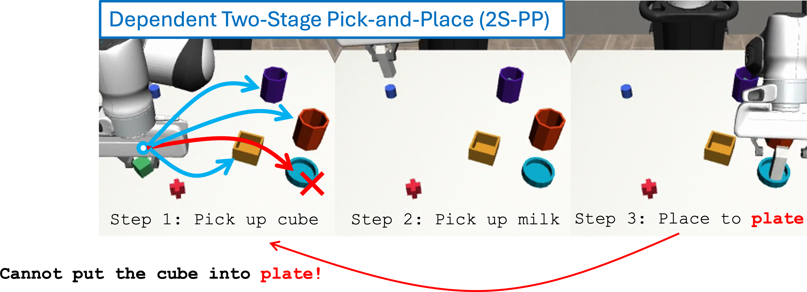

University of California, Berkeley
Full tuple coverage is unnecessary — a structured sparse subset recovers strong OOD performance, and one demo per instruction closes most of what remains. What decides which sparse subset works is our third result: when one step constrains another, coverage must be spread across those dependencies. At a fixed budget, spreading the same 16 tasks over more dependency cases more than triples held-out success — so the design rule is not how much data to collect, but along which axis to spread it.
We bound the compositional generalization gap by three terms, each with a different interpretation and controllability.
Whether individual subtask instructions are covered by training. This is a data issue resolvable only by expanding training support.
Whether familiar subtasks are recombined in unfamiliar ways at test time. Pairwise coverage in the training set controls this term.
The residual shift in context–action behavior when the policy is overly sensitive to irrelevant instruction correlations.
In Pick-Place-Press, one instruction means: pick one of 4 objects, place it in one of 4 receptacles, press one of 4 buttons. That is 4 × 4 × 4 = 64 possible instructions.
We train on B of them and test on all 64. The other 64 − B are held out: the same skills, in a combination never shown. Held-out success climbs steeply with B, then plateaus at B = 16 — a quarter of the set is enough.
And which 16 matters. The orthogonal 16 on the left covers every pair of ingredients exactly once, and reaches that plateau by itself.
Left: how the orthogonal 16 is built. Right: success vs. B for training sets drawn at random from the 64 · open standalone ↗
One row per instruction. Every value appears 4 times down a column, and every pairing across any two columns appears exactly once — nothing repeated, nothing missing.
Takeaway: Full coverage is unnecessary — and a well-chosen quarter of it is worth far more than a random quarter.
A rollout is one simulated attempt, scored success or failure. Each point pools all rollouts over 3 training seeds × 3 random draws of the B training instructions; the band is ±1 standard error across those draws (B=4 is a single fixed set, so it has no band). The star is the orthogonal 16 over 3 seeds. The grid is a design diagram, not measured data.
The curves average over instructions; this view breaks that average open. Each small cube is one of the 64, placed by its object, receptacle and button. Pick a training set, then rotate and hover to see how each one did.
Diagonal pretraining learns reusable subtask skills but not instruction steering. Finetuning with only one demonstration per task improves OOD success from 0.4% to 54.7%.
OOD = tasks never seen during pretraining · +1 demo/instruction = one demonstration for each of the 64 task instructions · open standalone ↗
L5 Pick & Place (64 tasks) — pretrained on B sparse diagonal tasks, then finetuned with 1 demo per instruction
Takeaway: Even with as few as 4 pretraining tasks, one demonstration per instruction is enough to jump from near-zero to >50% OOD success — the skills were already there.
* B=8 baseline uses a single-seed evaluation (no 3-seed pooled baseline available for that checkpoint).
Now the two halves of the instruction depend on each other: the robot is told where the second object goes, and must infer where the first one goes.
Dependent Two-Stage Pick-and-Place · 48-task space · every condition trained on B = 16 tasks · open standalone ↗
“Put the cube away, then put the milk on the plate.” Where the cube goes is never stated — but the plate is reserved for the milk, so the cube may go anywhere except the plate.

A task is an (o1, o2, c2) triple: 4 × 3 × 4 = 48 tasks, spanning 16 (o1, c2) combinations. Every combination in training demonstrates all 3 legal c1 — the rule is always fully shown. Crucially, all four conditions train on the same budget of 16 tasks — what changes is only how widely those 16 are spread over combinations, from 6 up to all 16. Coverage, not data volume.
At a fixed 16 training tasks, spreading them wider lifts held-out success 9.2% → 31.4% — no extra data, just better coverage. Seeing the rule in full is not enough; it has to be seen across combinations.
The board's counts and forbidden slots are exact. Which cells a condition covers is illustrative — the logs record how many, not which.
48-task Dependent 2S-PP (l4_2s_no_cont0, 48-task set). Mean ± SE across 5 training seeds, on the 32 held-out tasks. Cov6/9/12 are the B16 runs and Cov16 is the orthogonal 16-task design, so the training budget is 16 tasks in all four conditions — only coverage differs. Training on all 48 tasks is not shown: that run has no held-out split to measure.
Venue and full bibliographic details to be announced — the entry below will be updated once the paper appears.
@misc{wang2026compositional,
title = {Diagnosing Compositional Generalization in Sequential Robot Tasks},
author = {Wang, Yixiao and Wu, Cheng-En and Sun, Lingfeng and Wang, Pengcheng
and Ji, Xiang and Liang, Boyuan and Zhan, Guojian and Tomizuka, Masayoshi},
year = {2026},
note = {Preprint. Venue to be announced}
}